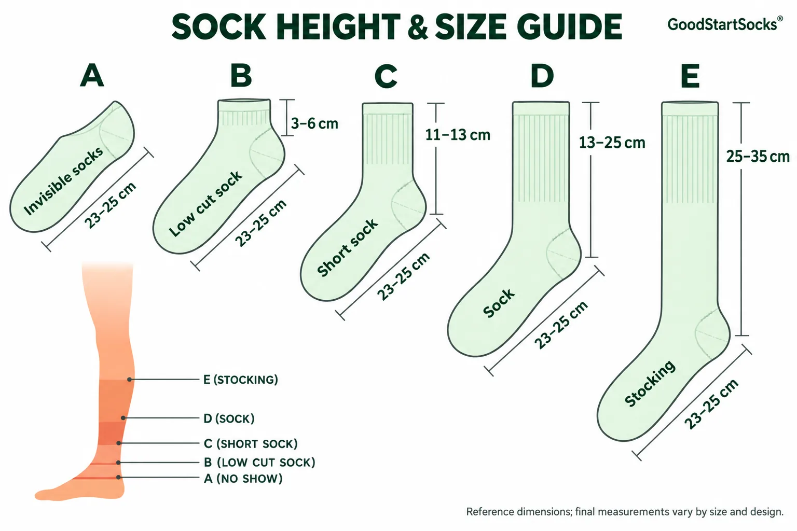

Choosing a sock length is about more than appearance. It also affects how the socks work with footwear and where your brand design can be seen.
For brands developing a custom collection, the best starting point is the intended use: everyday wear, sports, uniforms or seasonal products.

Common Sock Heights at a Glance
| Style | Typical Position | Common Uses |
|---|---|---|
| No-Show | Hidden inside suitable shoes | Casual footwear and discreet styling |
| Low-Cut | Near the shoe opening | Sneakers and everyday wear |
| Ankle | Around the ankle | Casual and athletic collections |
| Quarter | Just above the ankle | Training and outdoor activities |
| Crew | Lower calf | Branded merchandise and everyday collections |
| Mid-Calf | Around the middle of the calf | Dress socks and taller casual styles |
| Knee-High | Below the knee | Uniforms and statement designs |
These names are general descriptions. Different brands may use them differently, so a reference photo or approved sample is more useful than a style name alone.
Start with the Shoe and the Customer
Think about how the finished product will be worn. A short sock paired with a low sneaker creates a different result from a taller sock worn with boots.
For a retail collection, consider the customer’s wardrobe and the season. For a uniform project, check the complete outfit before deciding on the length.
Plan Your Logo Placement
Create the artwork on a template for the selected sock style. A logo placed too close to the heel may disappear inside the shoe, while a large knitted design may need adjustment on smaller sizes.
Ask to review the design both laid flat and worn. Stretch can change the appearance of lettering and geometric patterns.
Define How Length Will Be Measured
Before sampling, agree on the measurement method. For example, specify whether leg length is measured from the heel to the top of the cuff with the sock laid flat and unstretched.
Also confirm:
- Foot size range
- Cuff dimensions
- Yarn composition
- Measurement tolerance
- Care and washing instructions
For repeat orders, keep an approved sample and measurement sheet as the production reference.
Check Samples Before Bulk Production
Try the sample with the intended footwear, walk in it and review the fit after washing according to the proposed care instructions. Record any changes needed before approving production.
Develop Your Custom Socks with GoodStartSocks
Planning a new sock collection? Send GoodStartSocks your reference images, target sizes, artwork and order quantity. We can discuss the specifications and prepare the next steps for your custom project.
Discuss Your Custom Sock Project →